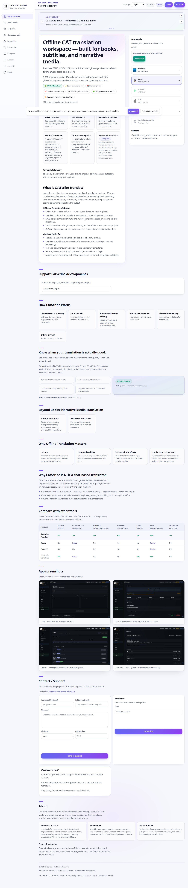
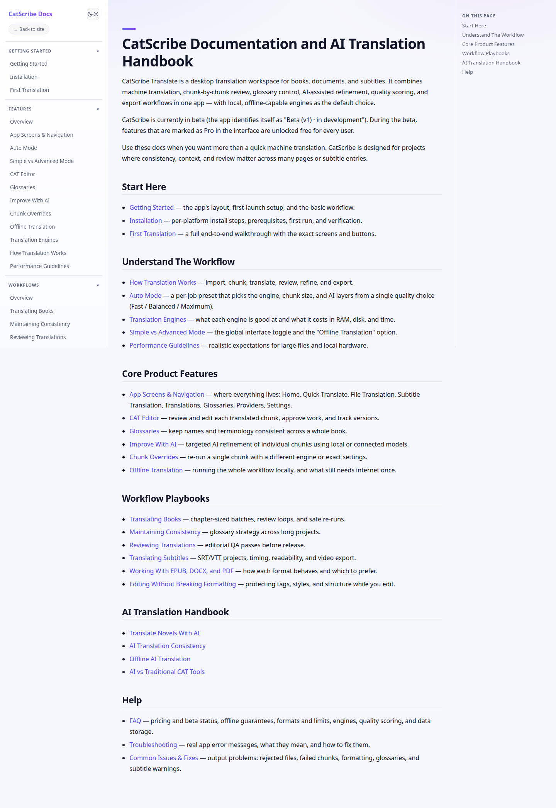
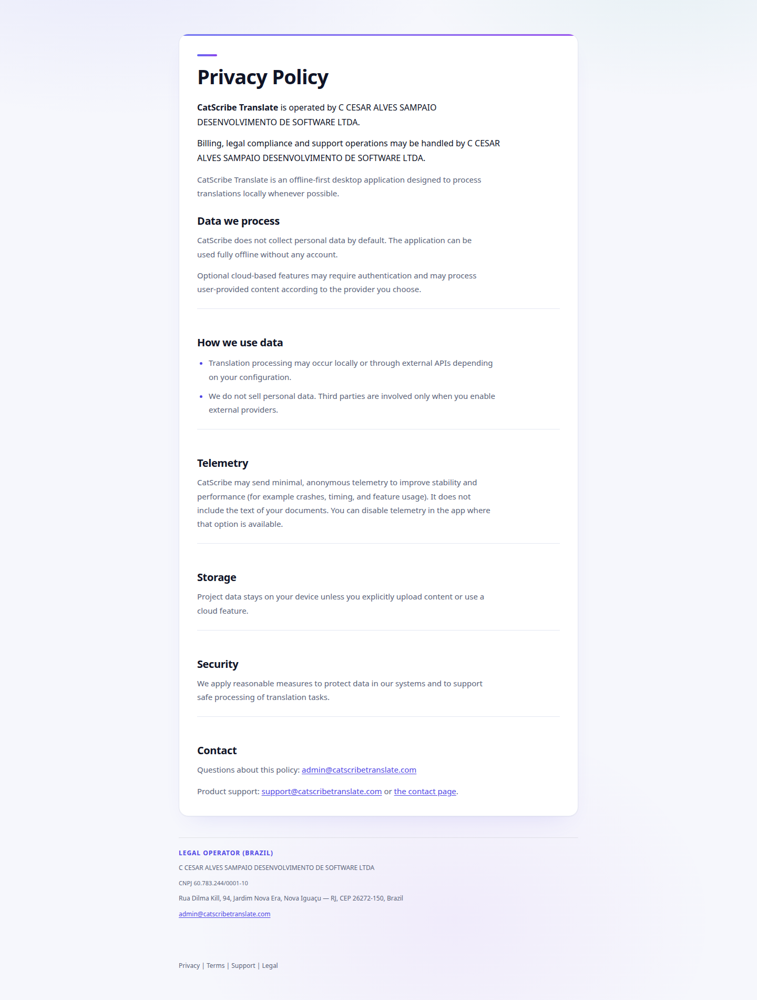
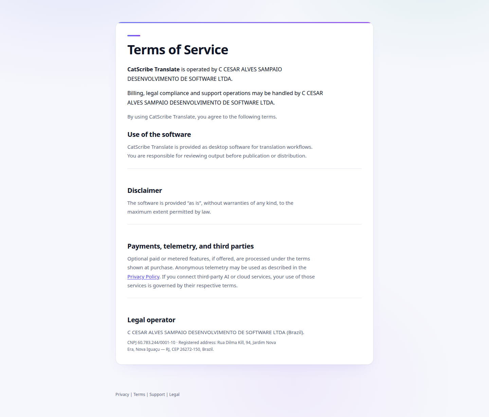

color.surface
4 usos · 4 pág.
Explorador de estilos web · vista de prueba
catscribetranslate.com
- Sitio analizado
- Fecha del run
- 10 nov 2026, 21:07 UTCduró 41,9 s · run 20261110-210731-c9b707 · estado: done
- Páginas recorridas
- 51 con error · límite maxPages 5 · maxDepth 1
- Tokens
- 15751 con 1–2 usos
- baseUnit
- no detectadareport.json trae
baseUnit: null
- 2 token(s) están en report.json pero no en tokens.json: font.letterSpacing.normal, font.lineHeight.normal.
120 usos valor con uso real 1 uso valor con 1–2 usos, probablemente accidental (borde discontinuo)
Color
Roles 4 tokens
color.primary
45 usos · 3 pág.
color.text.primary
374 usos · 4 pág.
color.text.secondary
293 usos · 4 pág.
Paleta 21 tokens · 6 con 1–2 usos
En el orden en que el run los nombró (color.palette.N).
color.palette.1
3 usos · 1 pág.
color.palette.2
alfa 3,5 %
2 usos · 1 pág.
color.palette.3
alfa 3,9 %
1 uso · 1 pág.
color.palette.4
49 usos · 4 pág.
color.palette.5
alfa 5,1 %
1 uso · 1 pág.
color.palette.6
alfa 7,8 %
1 uso · 1 pág.
color.palette.7
alfa 9 %
3 usos · 1 pág.
color.palette.8
alfa 22 %
4 usos · 1 pág.
color.palette.9
alfa 25,1 %
6 usos · 1 pág.
color.palette.10
alfa 34,9 %
8 usos · 1 pág.
color.palette.11
alfa 54,9 %
4 usos · 1 pág.
color.palette.12
5 usos · 1 pág.
color.palette.13
13 usos · 1 pág.
color.palette.14
alfa 7,8 %
2 usos · 1 pág.
color.palette.15
alfa 34,9 %
4 usos · 1 pág.
color.palette.16
alfa 40 %
4 usos · 1 pág.
color.palette.17
28 usos · 1 pág.
color.palette.18
301 usos · 4 pág.
color.palette.19
8 usos · 1 pág.
color.palette.20
30 usos · 1 pág.
color.palette.21
alfa 78 %
1 uso · 1 pág.
Tipografía
Familias 3 tokens
Inter AaBbCc 0123 áéñ
font.family.body
640 usos · 4 pág.
Sora AaBbCc 0123 áéñ
font.family.heading
81 usos · 4 pág.
Arial AaBbCc 0123 áéñ
font.family.1
18 usos · 2 pág.
La muestra usa la primera fuente de la pila que esté instalada en este equipo: la vista no descarga fuentes.
Tamaños 19 tokens · 5 con 1–2 usos
El veloz murciélago hindú comía feliz cardillo y kiwi
6 usos · 2 pág.
El veloz murciélago hindú comía feliz cardillo y kiwi
1 uso · 1 pág.
El veloz murciélago hindú comía feliz cardillo y kiwi
24 usos · 3 pág.
El veloz murciélago hindú comía feliz cardillo y kiwi
60 usos · 4 pág.
El veloz murciélago hindú comía feliz cardillo y kiwi
18 usos · 1 pág.
El veloz murciélago hindú comía feliz cardillo y kiwi
194 usos · 2 pág.
El veloz murciélago hindú comía feliz cardillo y kiwi
9 usos · 2 pág.
El veloz murciélago hindú comía feliz cardillo y kiwi
30 usos · 1 pág.
El veloz murciélago hindú comía feliz cardillo y kiwi
38 usos · 1 pág.
El veloz murciélago hindú comía feliz cardillo y kiwi
185 usos · 3 pág.
El veloz murciélago hindú comía feliz cardillo y kiwi
128 usos · 4 pág.
El veloz murciélago hindú comía feliz cardillo y kiwi
1 uso · 1 pág.
El veloz murciélago hindú comía feliz cardillo y kiwi
3 usos · 1 pág.
El veloz murciélago hindú comía feliz cardillo y kiwi
11 usos · 3 pág.
El veloz murciélago hindú comía feliz cardillo y kiwi
12 usos · 1 pág.
El veloz murciélago hindú comía feliz cardillo y kiwi
14 usos · 1 pág.
El veloz murciélago hindú comía feliz cardillo y kiwi
2 usos · 1 pág.
El veloz murciélago hindú comía feliz cardillo y kiwi
2 usos · 2 pág.
El veloz murciélago hindú comía feliz cardillo y kiwi
1 uso · 1 pág.
Muestras a tamaño real, con la pila de font.family.body.
Pesos 5 tokens
| Token | Valor | Usos | Detalle |
|---|---|---|---|
| font.weight.400 | 532 usos · 4 pág. | ||
| font.weight.500 | 53 usos · 2 pág. | ||
| font.weight.600 | 49 usos · 4 pág. | ||
| font.weight.700 | 80 usos · 4 pág. | ||
| font.weight.800 | 25 usos · 4 pág. |
Interlineados 30 tokens · 15 con 1–2 usos
| Token | Valor | Usos | Detalle |
|---|---|---|---|
| font.lineHeight.1 | 3 usos · 1 pág. | ||
| font.lineHeight.2 | 1 uso · 1 pág. | ||
| font.lineHeight.3 | 1 uso · 1 pág. | ||
| font.lineHeight.4 | 1 uso · 1 pág. | ||
| font.lineHeight.5 | 1 uso · 1 pág. | ||
| font.lineHeight.6 | 1 uso · 1 pág. | ||
| font.lineHeight.7 | 2 usos · 1 pág. | ||
| font.lineHeight.8 | 13 usos · 2 pág. | ||
| font.lineHeight.9 | 1 uso · 1 pág. | ||
| font.lineHeight.10 | 52 usos · 3 pág. | ||
| font.lineHeight.11 | 25 usos · 1 pág. | ||
| font.lineHeight.12 | 18 usos · 1 pág. | ||
| font.lineHeight.13 | 1 uso · 1 pág. | ||
| font.lineHeight.14 | 163 usos · 1 pág. | ||
| font.lineHeight.15 | 16 usos · 1 pág. | ||
| font.lineHeight.16 | 12 usos · 1 pág. | ||
| font.lineHeight.17 | 1 uso · 1 pág. | ||
| font.lineHeight.18 | 166 usos · 3 pág. | ||
| font.lineHeight.19 | 19 usos · 2 pág. | ||
| font.lineHeight.20 | 1 uso · 1 pág. | ||
| font.lineHeight.21 | 10 usos · 2 pág. | ||
| font.lineHeight.22 | 1 uso · 1 pág. | ||
| font.lineHeight.23 | 70 usos · 3 pág. | ||
| font.lineHeight.24 | 12 usos · 1 pág. | ||
| font.lineHeight.25 | 1 uso · 1 pág. | ||
| font.lineHeight.26 | 14 usos · 1 pág. | ||
| font.lineHeight.27 | 2 usos · 2 pág. | ||
| font.lineHeight.28 | 2 usos · 1 pág. | ||
| font.lineHeight.29 | 1 uso · 1 pág. | ||
| font.lineHeight.normalsolo en report.json | 128 usos · 2 pág. |
Letter-spacing 15 tokens · 7 con 1–2 usos
| Token | Valor | Usos | Detalle |
|---|---|---|---|
| font.letterSpacing.1 | 1 uso · 1 pág. | ||
| font.letterSpacing.2 | 2 usos · 2 pág. | ||
| font.letterSpacing.3 | 2 usos · 1 pág. | ||
| font.letterSpacing.4 | 14 usos · 1 pág. | ||
| font.letterSpacing.5 | 12 usos · 1 pág. | ||
| font.letterSpacing.6 | 14 usos · 3 pág. | ||
| font.letterSpacing.7 | 33 usos · 2 pág. | ||
| font.letterSpacing.8 | 1 uso · 1 pág. | ||
| font.letterSpacing.9 | 13 usos · 2 pág. | ||
| font.letterSpacing.10 | 1 uso · 1 pág. | ||
| font.letterSpacing.11 | 10 usos · 1 pág. | ||
| font.letterSpacing.12 | 17 usos · 2 pág. | ||
| font.letterSpacing.13 | 1 uso · 1 pág. | ||
| font.letterSpacing.14 | 1 uso · 1 pág. | ||
| font.letterSpacing.normalsolo en report.json | 617 usos · 4 pág. |
Espaciado
40 tokens · 11 con 1–2 usos · Cada barra mide exactamente su valor en píxeles. Las barras huecas son valores con 1–2 usos.
6 usos · 1 pág.
83 usos · 4 pág.
28 usos · 2 pág.
13 usos · 1 pág.
27 usos · 1 pág.
70 usos · 2 pág.
68 usos · 2 pág.
65 usos · 3 pág.
7 usos · 1 pág.
2 usos · 1 pág.
140 usos · 4 pág.
16 usos · 1 pág.
205 usos · 3 pág.
4 usos · 1 pág.
141 usos · 4 pág.
8 usos · 1 pág.
148 usos · 2 pág.
7 usos · 2 pág.
6 usos · 1 pág.
6 usos · 1 pág.
18 usos · 4 pág.
15 usos · 3 pág.
21 usos · 4 pág.
1 uso · 1 pág.
13 usos · 3 pág.
3 usos · 3 pág.
2 usos · 1 pág.
20 usos · 3 pág.
2 usos · 1 pág.
2 usos · 2 pág.
3 usos · 2 pág.
6 usos · 1 pág.
4 usos · 4 pág.
1 uso · 1 pág.
2 usos · 2 pág.
2 usos · 2 pág.
1 uso · 1 pág.
1 uso · 1 pág.
2 usos · 1 pág.
8 usos · 2 pág.
Radios
11 tokens · 3 con 1–2 usos
radius.1
31 usos · 1 pág.
radius.2
1 uso · 1 pág.
radius.3
5 usos · 1 pág.
radius.4
12 usos · 1 pág.
radius.5
6 usos · 1 pág.
radius.6
2 usos · 1 pág.
radius.7
34 usos · 1 pág.
radius.8
1 uso · 1 pág.
radius.9
14 usos · 3 pág.
radius.10
14 usos · 2 pág.
radius.full
9999px
3 usos · 1 pág.
Sombras
9 tokens · 4 con 1–2 usos · Las sombras se muestran siempre sobre un fondo claro, también en modo oscuro, para que se vean como en el sitio.
shadow.1 1 capa
1 uso · 1 pág.
shadow.2 1 capa
8 usos · 1 pág.
shadow.3 1 capa
1 uso · 1 pág.
shadow.4 1 capa
1 uso · 1 pág.
shadow.5 2 capas
1 uso · 1 pág.
shadow.6 2 capas
5 usos · 1 pág.
shadow.7 2 capas
7 usos · 1 pág.
shadow.8 2 capas
4 usos · 3 pág.
shadow.9 2 capas
4 usos · 1 pág.
Casi duplicados
3 pares. El run no fusiona estos colores: solo los señala (deltaE 2000 menor que 2).
color.palette.17 · 28 usos
color.palette.18 · 301 usos
deltaE 1,24
color.surface · 4 usos
color.palette.20 · 30 usos
deltaE 1,29
color.palette.20 · 30 usos
color.primary · 45 usos
deltaE 1,75
Páginas


CatScribe Translate — Offline AI Translation Software
HTTP 200


Documentation | CatScribe Translate Docs
HTTP 200
Sin captura
sin título
sin respuesta
Error: page.goto: Download is starting


Privacy Policy | CatScribe Translate
HTTP 200


Terms of Service | CatScribe Translate
HTTP 200
Variables CSS
Mostrar las 75 variables (70 nombres distintos)
| Variable | Valor | Páginas |
|---|---|---|
| 2 | ||
| 2 | ||
| 1 | ||
| 1 | ||
| 1 | ||
| 1 | ||
| 3 | ||
| 3 | ||
| 1 | ||
| 1 | ||
| 1 | ||
| 1 | ||
| 1 | ||
| 1 | ||
| 1 | ||
| 1 | ||
| 1 | ||
| 1 | ||
| 1 | ||
| 1 | ||
| 1 | ||
| 1 | ||
| 1 | ||
| 1 | ||
| 1 | ||
| 1 | ||
| 1 | ||
| 1 | ||
| 1 | ||
| 1 | ||
| 1 | ||
| 1 | ||
| 1 | ||
| 1 | ||
| 1 | ||
| 1 | ||
| 1 | ||
| 1 | ||
| 1 | ||
| 1 | ||
| 1 | ||
| 1 | ||
| 2 | ||
| 1 | ||
| 2 | ||
| 1 | ||
| 2 | ||
| 1 | ||
| 1 | ||
| 1 | ||
| 1 | ||
| 1 | ||
| 1 | ||
| 1 | ||
| 1 | ||
| 1 | ||
| 3 | ||
| 1 | ||
| 3 | ||
| 1 | ||
| 1 | ||
| 2 | ||
| 1 | ||
| 1 | ||
| 1 | ||
| 1 | ||
| 1 | ||
| 1 | ||
| 1 | ||
| 1 | ||
| 1 | ||
| 3 | ||
| 1 | ||
| 1 | ||
| 1 |